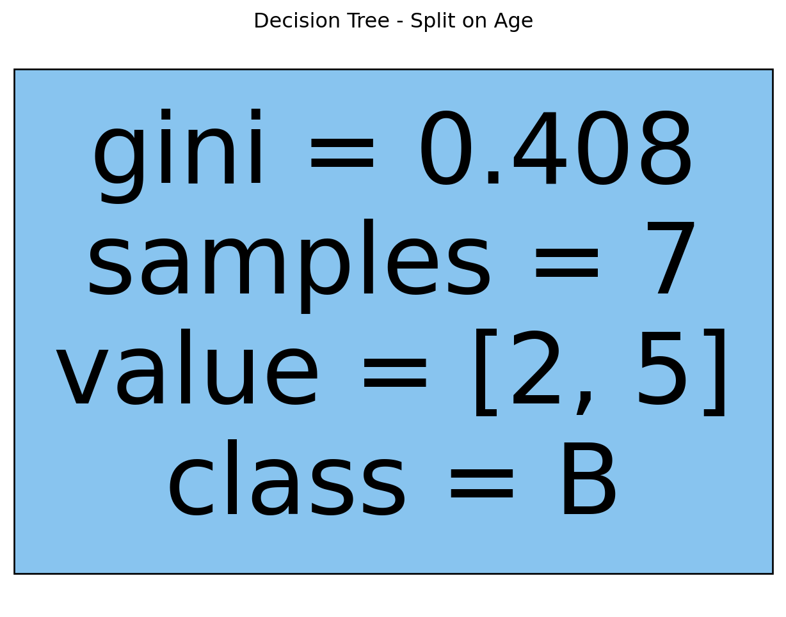
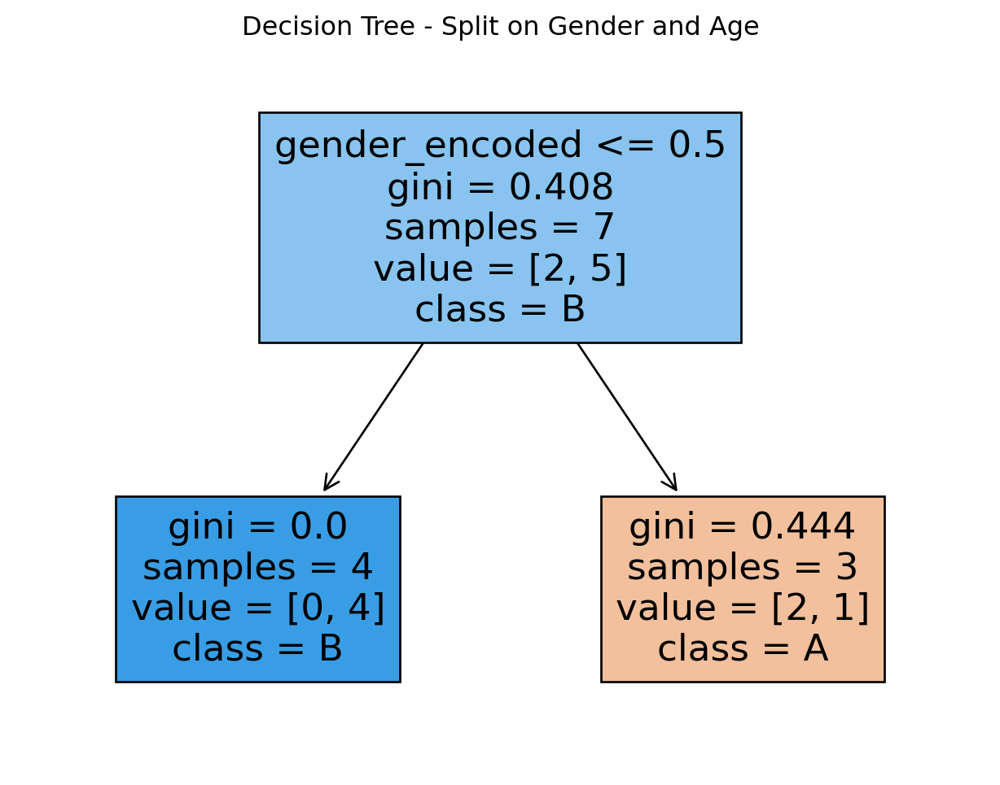

import pandas as pd
import numpy as np
from sklearn.tree import DecisionTreeClassifier, plot_tree
from sklearn.metrics import accuracy_score
from sklearn.preprocessing import LabelEncoder
import matplotlib.pyplot as plt
import seaborn as snsTwo Products
Load the Training Data
url = "https://docs.google.com/spreadsheets/d/e/2PACX-1vTFmRX4RW3PitgcJya0X2sRbSiD0J2t0oYewyhkkyWwR9i8NIaHiuQKrBtLlrwG9fzn4MvNOM92olnK/pub?gid=0&single=true&output=csv"
train = pd.read_csv(url)
print(train.head()) gender age product
0 F Adult MindCraft
1 M Adult MindCraft
2 F Adult MindCraft
3 F Young MindCraft
4 M Young AlienBetweenUsHere is the original data frame. There are two predictors gender and age and the result we are trying predict is product, which is the product they will buy.
Load the Testing Data
url = "https://docs.google.com/spreadsheets/d/e/2PACX-1vTFmRX4RW3PitgcJya0X2sRbSiD0J2t0oYewyhkkyWwR9i8NIaHiuQKrBtLlrwG9fzn4MvNOM92olnK/pub?gid=1744064271&single=true&output=csv"
test = pd.read_csv(url)
print(test.head()) gender age product
0 F Adult MindCraft
1 F Young AlienBetweenUs
2 F Adult MindCraft
3 F Young MindCraft
4 M Young AlienBetweenUsModel 1 - Split on Gender
Train with Training Data
# Encode the gender column
le = LabelEncoder()
train['gender_encoded'] = le.fit_transform(train['gender'])
test['gender_encoded'] = le.transform(test['gender'])
model = DecisionTreeClassifier(criterion='gini', max_depth=1, min_impurity_decrease=0.0)
model.fit(train[['gender_encoded']], train['product'])
fig, ax = plt.subplots(figsize=(8, 6))
plot_tree(model, feature_names=['gender_encoded'], class_names=['A', 'B'], filled=True)
plt.title("Decision Tree - Split on Gender")
plt.show()The tree above makes 1 mistake out of 7.
Test With Testing Data
pred = model.predict(test[['gender_encoded']])
compare = pd.DataFrame({'actual': test['product'], 'predictions': pred})
print(compare)
print("Confusion Matrix:")
print(pd.crosstab(test['product'], pred))
print("Accuracy:")
print(accuracy_score(test['product'], pred)) actual predictions
0 MindCraft MindCraft
1 AlienBetweenUs MindCraft
2 MindCraft MindCraft
3 MindCraft MindCraft
4 AlienBetweenUs AlienBetweenUs
5 AlienBetweenUs AlienBetweenUs
6 AlienBetweenUs MindCraft
7 MindCraft MindCraft
8 MindCraft AlienBetweenUs
Confusion Matrix:
col_0 AlienBetweenUs MindCraft
product
AlienBetweenUs 2 2
MindCraft 1 4
Accuracy:
0.6666666666666666Model 2 - Split on Age
Train with Training Data
# Convert the 'age' column to numeric
train['age'] = pd.to_numeric(train['age'], errors='coerce')
test['age'] = pd.to_numeric(test['age'], errors='coerce')
# Handle any missing values in the 'age' column
train['age'] = train['age'].fillna(0)
test['age'] = test['age'].fillna(0)
model = DecisionTreeClassifier(criterion='gini', max_depth=1, min_impurity_decrease=0.0)
model.fit(train[['age']], train['product'])
fig, ax = plt.subplots(figsize=(8, 6))
plot_tree(model, feature_names=['age'], class_names=['A', 'B'], filled=True)
plt.title("Decision Tree - Split on Age")
plt.show()
The tree above makes 2 mistakes out of 7.
Test With Testing Data
pred = model.predict(test[['age']])
compare = pd.DataFrame({'actual': test['product'], 'predictions': pred})
print(compare)
print("Confusion Matrix:")
print(pd.crosstab(test['product'], pred))
print("Accuracy:")
print(accuracy_score(test['product'], pred)) actual predictions
0 MindCraft MindCraft
1 AlienBetweenUs MindCraft
2 MindCraft MindCraft
3 MindCraft MindCraft
4 AlienBetweenUs MindCraft
5 AlienBetweenUs MindCraft
6 AlienBetweenUs MindCraft
7 MindCraft MindCraft
8 MindCraft MindCraft
Confusion Matrix:
col_0 MindCraft
product
AlienBetweenUs 4
MindCraft 5
Accuracy:
0.5555555555555556Model 3 - Split on Gender, then Age
Train with Training Data
model = DecisionTreeClassifier(criterion='gini', max_depth=3, min_impurity_decrease=0.0)
model.fit(train[['gender_encoded', 'age']], train['product'])
fig, ax = plt.subplots(figsize=(8, 6))
plot_tree(model, feature_names=['gender_encoded', 'age'], class_names=['A', 'B'], filled=True)
plt.title("Decision Tree - Split on Gender and Age")
plt.show()
Test With Testing Data
pred = model.predict(test[['gender_encoded', 'age']])
compare = pd.DataFrame({'actual': test['product'], 'predictions': pred})
print(compare)
print("Confusion Matrix:")
print(pd.crosstab(test['product'], pred))
print("Accuracy:")
print(accuracy_score(test['product'], pred)) actual predictions
0 MindCraft MindCraft
1 AlienBetweenUs MindCraft
2 MindCraft MindCraft
3 MindCraft MindCraft
4 AlienBetweenUs AlienBetweenUs
5 AlienBetweenUs AlienBetweenUs
6 AlienBetweenUs MindCraft
7 MindCraft MindCraft
8 MindCraft AlienBetweenUs
Confusion Matrix:
col_0 AlienBetweenUs MindCraft
product
AlienBetweenUs 2 2
MindCraft 1 4
Accuracy:
0.6666666666666666The best model on these training sets is the last one, since the accuracy is smallest for that one.